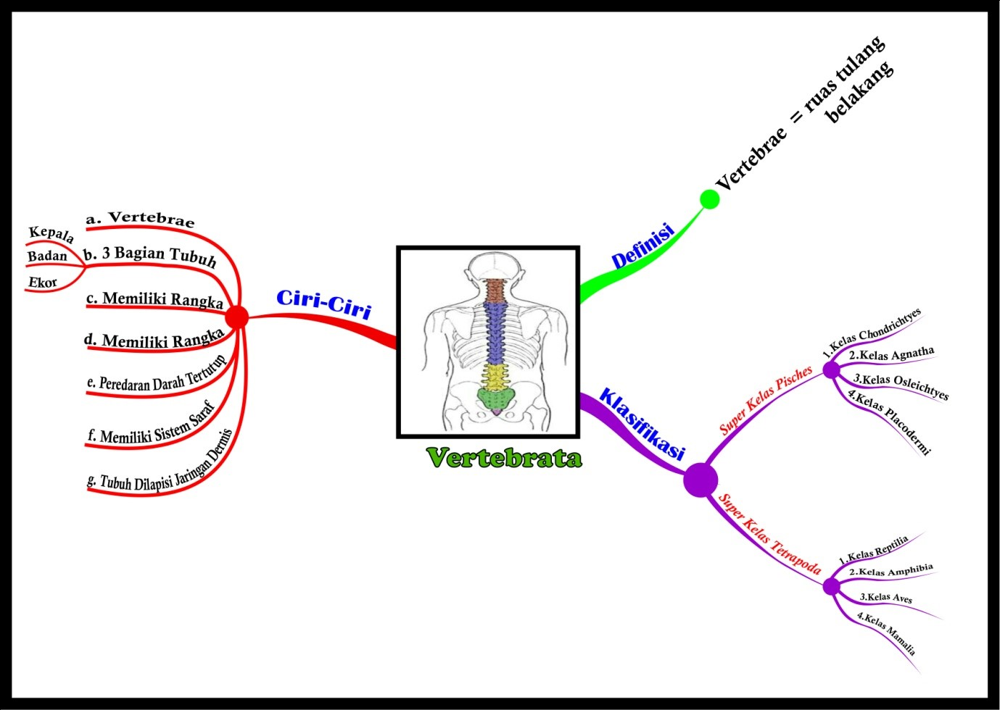

MATERI Vertebrata

- Definisi Vertebrata Vertebrata merupakan hewan-hewan yang memiliki vertebrae (tulang belakang)
- Ciri-ciri Vertebrata
- Memiliki Vertebrae (tulang belakang)
- Bagian tubuh terbagi menjadi 3 bagian yaitu kepala,badan dan ekor
- Vertebrata memiliki rangka
- Vertebrata memiliki tubuh bersimetri bilateral dengan kepala yang jelas berisi otak
- Memiliki sistem peredaran darah tertutup
- Memiliki sistem saraf
- Tubuh dilapisi oleh jaringan epidermis
- Klasifikasi Vertebrata Vertebrata merupakan sub filum yang memiliki 2 super kelas yang terdiri dari
- Super Kelas Pisces yang terdiri dari 4 kelas yaitu :
- Kelas Agnatha
- Kelas Chondrichtyes
- Kelas Osteichtyes
- Kelas Placodermi (sudah punah)
- Super Kelas Tetrapoda yang terdiri dari 4 kelas yaitu :
- Kelas Reptilia
- Kelas Amphibia
- Kelas Aves
- Kelas Mammalia
- Peranan Hewan Vertebrata dalam kehidupan Hewan vertebrata memiliki peranan yang sangat penting, baik dalam ekosistem maupun sebagai kebutuhan hidup manusia. Adapun beberapa peran hewan Vertebrata adalah sebagai berikut :
- Sebagai konsumen dan juga predator dalam ekosistem
- Untuk kebutuhan pangan bagi manusia
- Sebagai hewan ternak contohnya: ayam dan bebek
- Sebagai hewan peliharaan contohnya: kucing dan burung